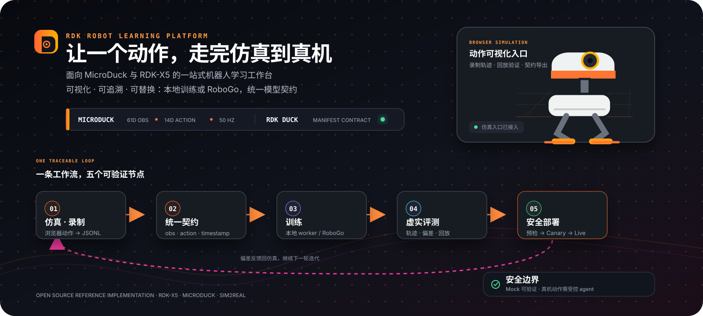

三个产品，覆盖机器人开发 · 训练 · 运维
RDK Studio、RDK 训练平台与 RDK 可观测平台——从开发板上的第一行代码，到生产环境的持续运维。
开发者工作台
RDK Studio
面向 D-Robotics RDK 机器人开发、运行与调试的一体化 AI 原生工作台。
基于 DSH 的 Agent 理解项目、经受控工具操作已连接设备、解释失败，把终端、文件、远程桌面、编辑器、烧录流程和验证证据放在同一产品中。
AI Agent 协作
Agent 理解项目上下文，经受控工具操作设备并解释失败
烧录与验证
系统烧录流程化，验证证据同屏留存、可回溯
一体化界面
终端、文件、远程桌面与 IDE 收敛到同一工作台
自动化工作流
可复用 Skills 把重复开发步骤固化为手动可控的一键任务
训练与仿真
RDK 训练平台
从浏览器里的第一步，到 RDK-X5 上的下一步。
仿真、录制、训练、评测与部署围绕同一份可追溯模型契约：浏览器负责观察和录制，服务端负责权限、制品与审计，板端与云端 adapter 负责真正的执行。
仿真与录制
浏览器低门槛动作入口，轨迹沉淀为统一契约
策略训练
PPO、MLP 行为克隆与 ACT，ONNX 导出数值校验
Sim2Real 评测
统一时间轴回放、奖励曲线与虚实偏差摘要
受控部署
制品、板型预检与人工审批构成可审计发布链

运维与可观测
RDK 可观测平台
面向生产环境的独立可观测平台，一个进程提供全部能力。
可独立部署、独立扩缩容，与业务站点只通过 HTTP 端点和版本化 contract 耦合；全部能力均有 JSON API，支持 OTLP 三信号与 Prometheus 接入。
运营工作台与 SLO
当前态势、SLO 错误预算与证据化行动环
告警与自愈
三类规则 60 秒评估，六渠道投递与白名单剧本
事故管理
事故工作台、证据化根因假设与行动审批闭环
链路追踪
Agent 原生 Trace 与按 run 下钻的运行证据链
边缘设备观测
板级注册、心跳在线与 CPU/内存/温度/BPU 指标
观测查询与面板
OTLP 落库指标与日志查询，可保存为自定义面板
运营工作台 · 能力分区
当前态势事故调查告警策略链路追踪
运营指标观测查询边缘设备数据库资产
模型池通知模板租户管理公开状态页
SLO错误预算
60s规则评估周期
6告警投递渠道
OTLP三信号接入